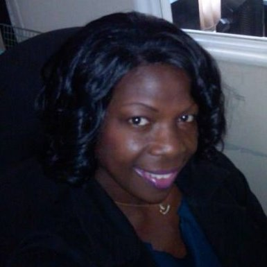

John W Thompson
John W Thompson
I am a senior at Loyola University of Chicago enrolled in their 5 year Software Engineering M.S./B.S. program. I am currently working as a Software Development Engineer at 4C Insights where I engineer software for a large single page web application. For more info check out my LinkedIn

Joan Clarke
currently a Computer Science Graduate Student at Loyola University Chicago. Joan is desirous of working the fields of Web Design, Database Programming, and Education and has aspirations of owning her own company in the future. In pursuit of her dreams, Joan has taken courses such as Client-side Web Design, Database programming and Data structures among others. She has also taken a number of classes (HTML, CSS, Javascript, Web Development) from online schools such as The NewBoston and Udemy online schools.
 Paulo Chaves da Silva Filho
Paulo Chaves da Silva Filho
I am a study abroad student. I came to the US to learn English and to take two semesters of Computer Science undergraduate classes. This semester is my last one at Loyola. I have experience as a web developer. A couple years ago I worked for a company for 3 years in my hometown developing a single page web application. In this job I acquired experience with technologies such as PHP, HTML, CSS, Javascript, MySql and PostgreSql. This semester I am also taking Web Services class, this class class has helped me a lot to develop my skills with web development working with Java and REST APIs.